Jacobus, 58 — GmbH-Geschäftsführer (DGA)
Inhaber eines Familienunternehmens, Eigenheim €850.000, Ersparnisse €280.000, BV €120.000, Rentenpot €145.000. Unternehmensnachfolge 2033.
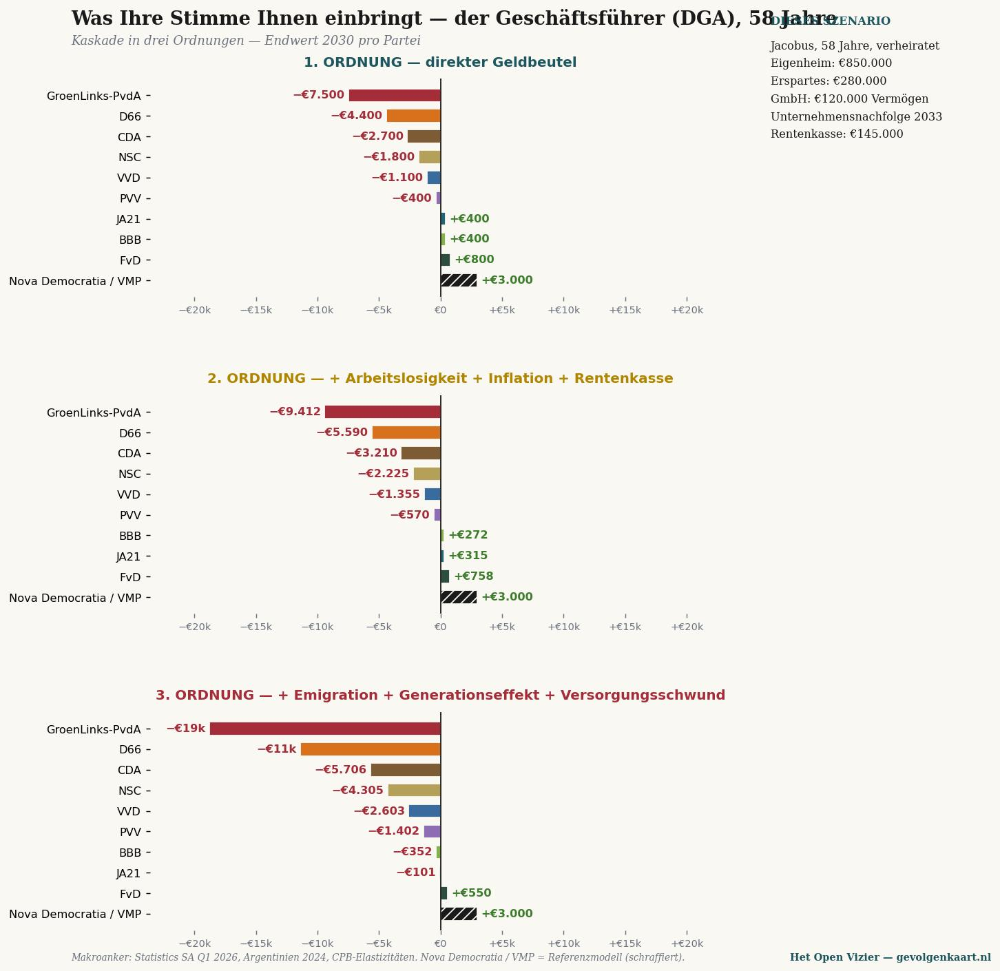
In voller Größe öffnen →Eine Zeitung über das Denken ohne Scheuklappen
Für alle, die PRO, GroenLinks-PvdA oder D66 wählen — zwanzig Positionen, eine Matrix
Jacobus van Merksteijn · Malta, Juni 2026
Zwanzig Personen- und Unternehmensprofile × zehn niederländische Parteien. Zahlen geben den Effekt 3. Ordnung (% des Einkommens für Bürger, % des Umsatzes für Unternehmen) im Jahr 2030 an — direktes Portemonnaie plus Arbeitslosigkeit, Inflation, Pensionstoperosion, Emigration, Generationseffekt und Leistungsabbau. Quellen: CBS Kaufkraft, Statistics South Africa Q1 2026, Argentinien 2024, CPB-Elastizitäten.
Nachfolgend für neun Personenprofile die Kaskade in drei Ordnungen — was mit Ihrem Portemonnaie passiert und was passiert, wenn die Folgen bis 2030 durchgerechnet werden. Klicken Sie auf ein Diagramm für die vollständige Größe.
Inhaber eines Familienunternehmens, Eigenheim €850.000, Ersparnisse €280.000, BV €120.000, Rentenpot €145.000. Unternehmensnachfolge 2033.

In voller Größe öffnen →Familienbetrieb, 95 Kühe, EU-Qualität. Eigenes Land und Stall, Nachfolger in Ausbildung.
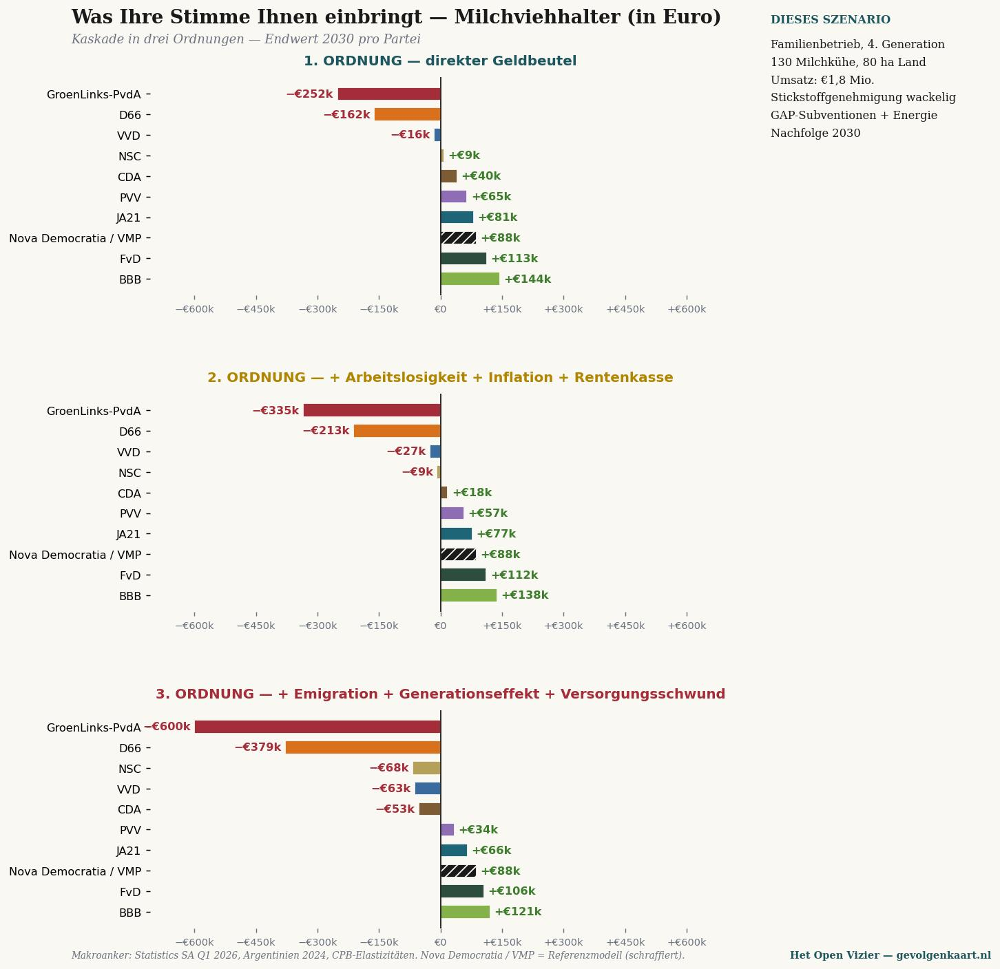
In voller Größe öffnen →Fünf Jahre in den Niederlanden über die 30%-Regelung, zwei Kinder, international mobil, Partner arbeitet in der Tech-Branche.
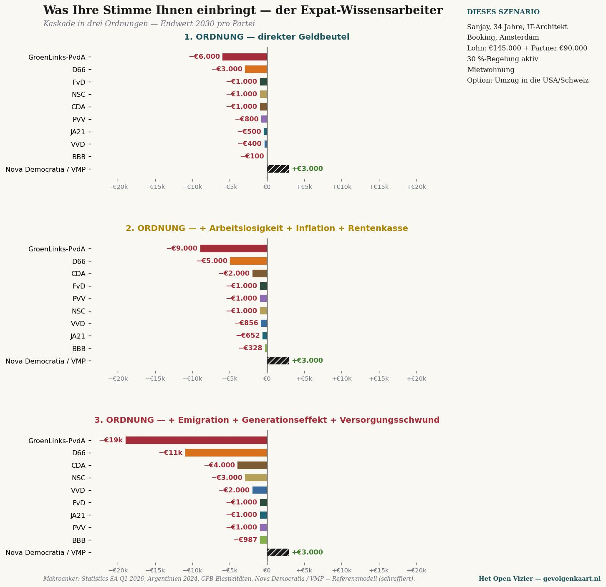
In voller Größe öffnen →Beide in IT/Finanzen, gemeinsames Einkommen €250.000, Eigenheim €650.000, Anlageportfolio €420.000.
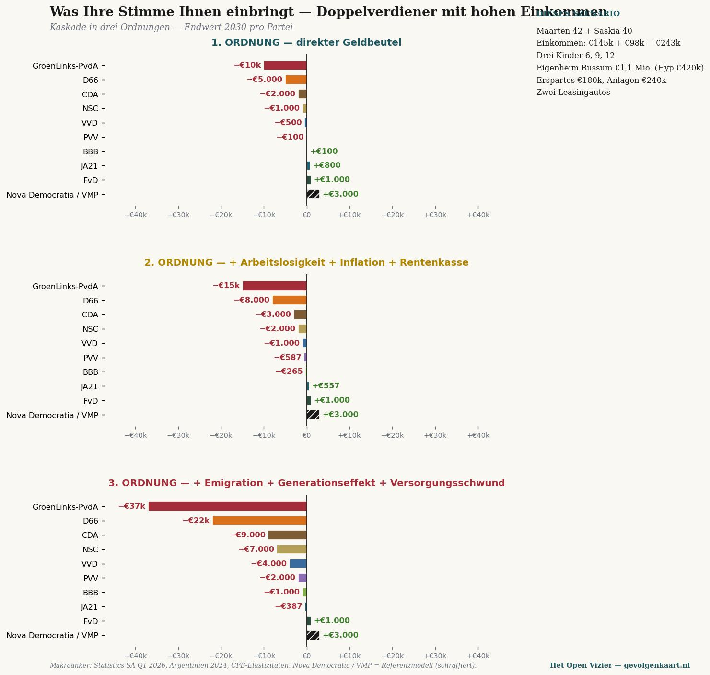
In voller Größe öffnen →Modale Alleinverdienerfamilie, Partner zuhause mit drei Kindern, Eigenheim €420.000, Rentenpot €78.000.
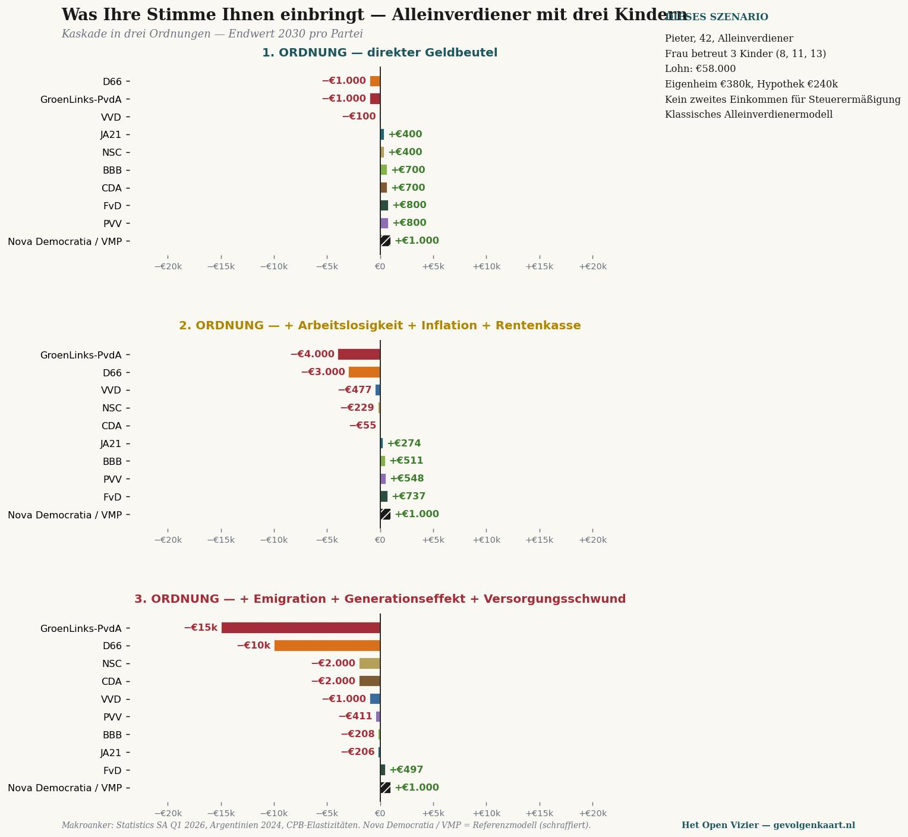
In voller Größe öffnen →Zwei Einkommen zusammen modal, zwei kleine Kinder, Eigentumswohnung €380.000, Ferienhaus der Großeltern.
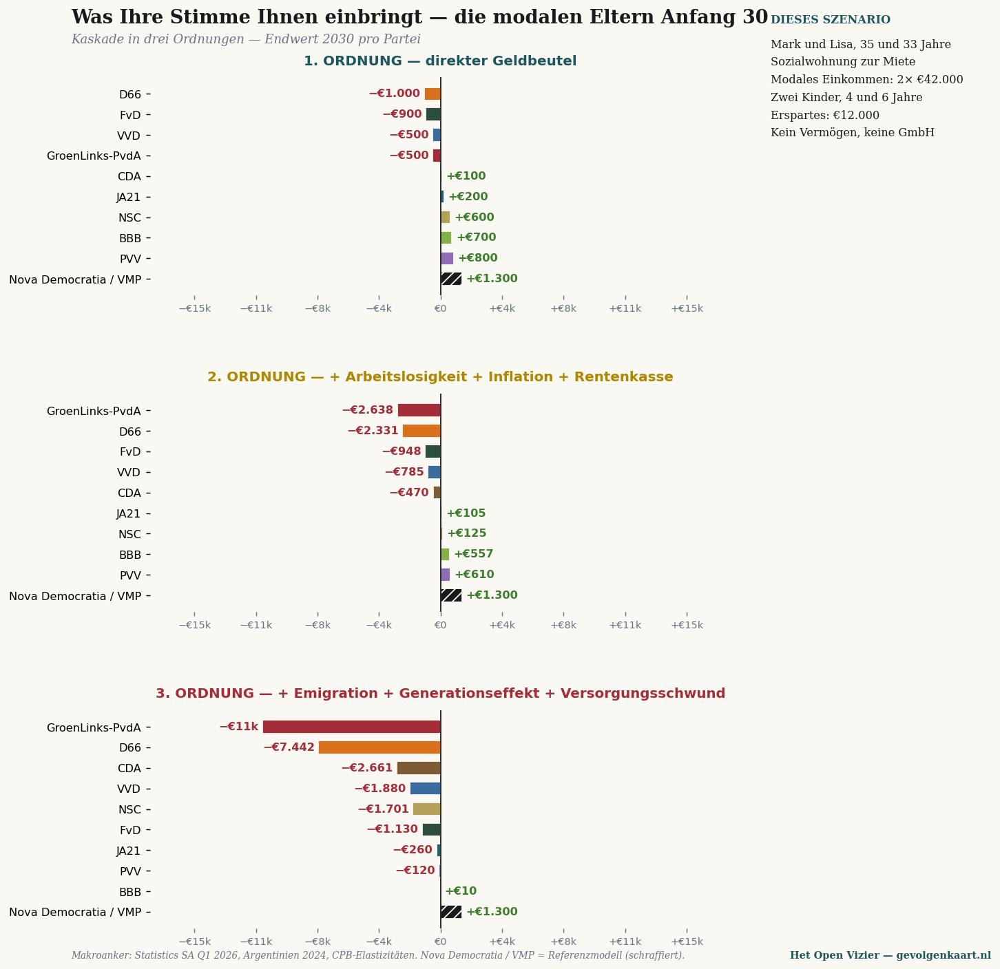
In voller Größe öffnen →AOW + Betriebsrente €38.000, Eigenheim abbezahlt (€420.000), Ersparnisse €95.000. Witwe, Kinder aus dem Haus.
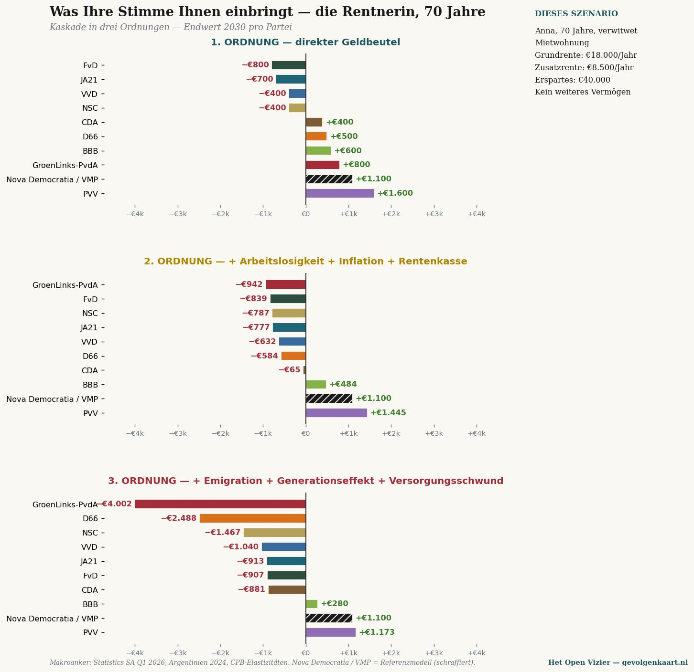
In voller Größe öffnen →Multiple Sklerose, teilweise WIA (€18.500 + WW-Ergänzung), Partner berufstätig, Sozialwohnung.
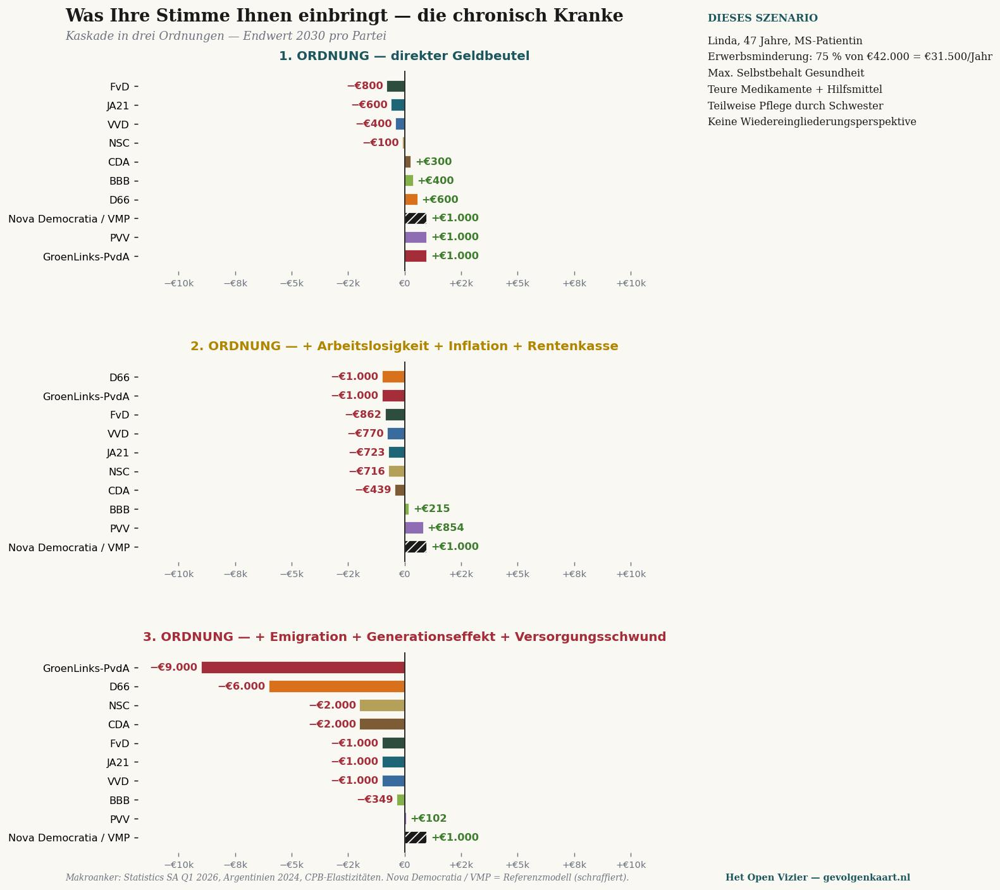
In voller Größe öffnen →Vollständige Wlz-Pflege, Eigenanteil, Rentenauszahlung vollständig für Pflege. Profil: kostenintensiv im 3.-Ordnungs-Szenario.
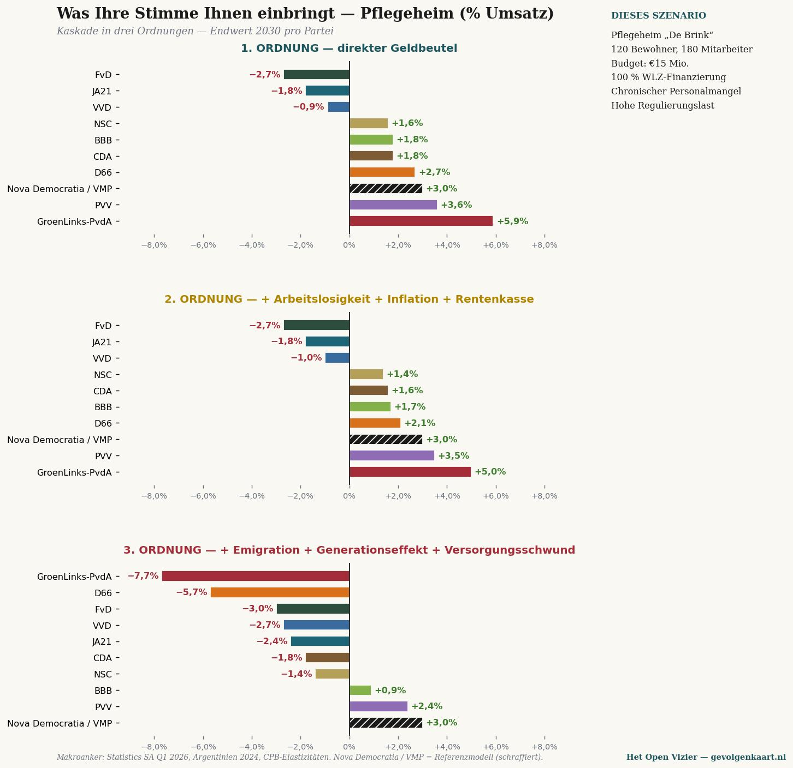
In voller Größe öffnen →Drei Profile — GmbH-Geschäftsführer, Rentnerin, modale Eltern — ausgearbeitet in vier Zonen: Plünderer, Mitläufer, Wendende, Verteidiger. Je weiter von der blauen Fläche (€0) entfernt, desto weiter bringt Sie Ihre Stimme von Ihrer aktuellen Position weg. Die grüne gestrichelte Linie zeigt das BiCRS/Ethanol-Szenario: in diesem Alternativpfad erhält jede Partei einen positiven Endwert — die Erholung durch Biomass-to-Ethanol hebt alle Positionen über die €0-Ebene.
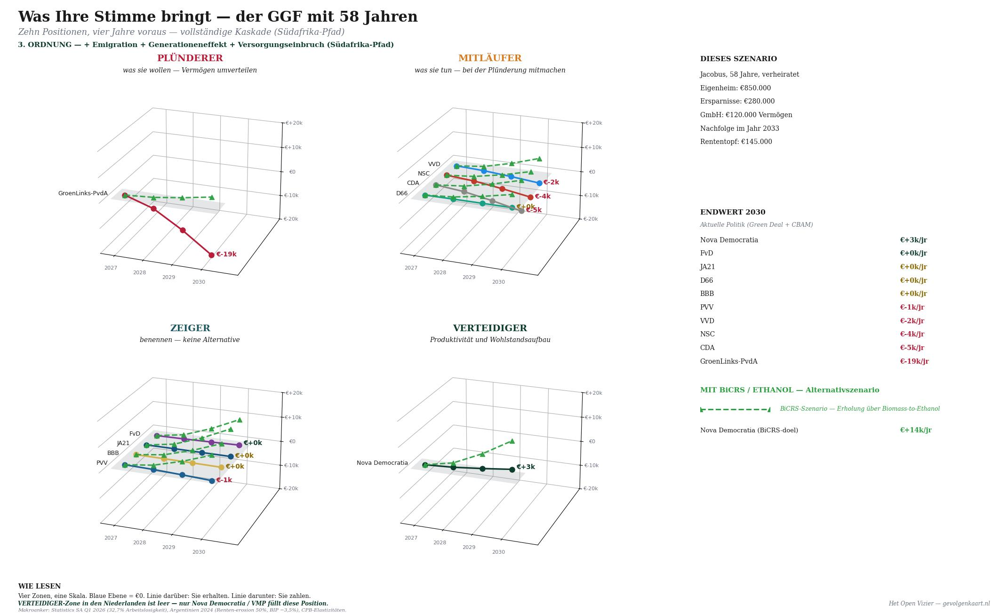
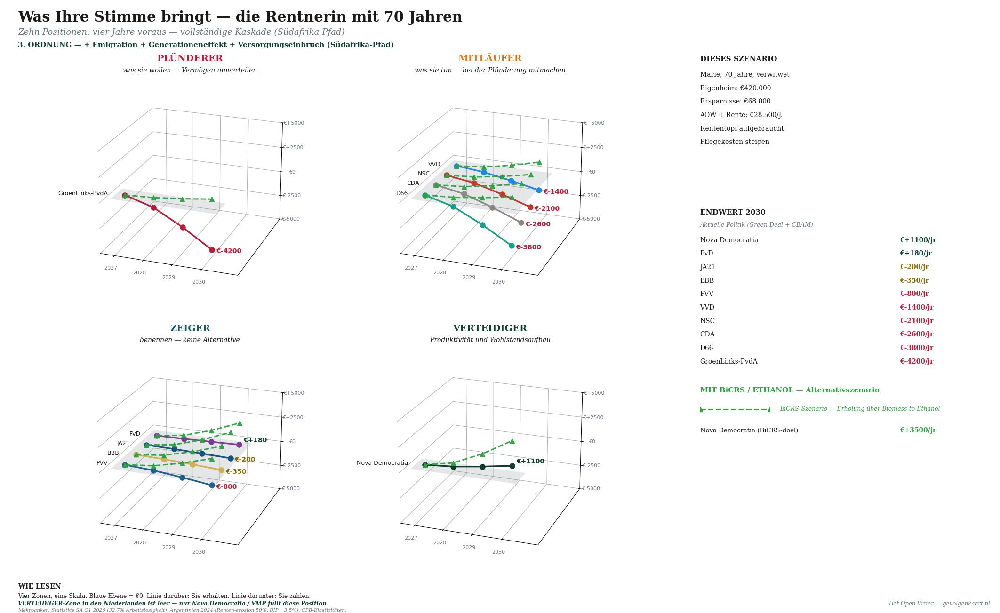
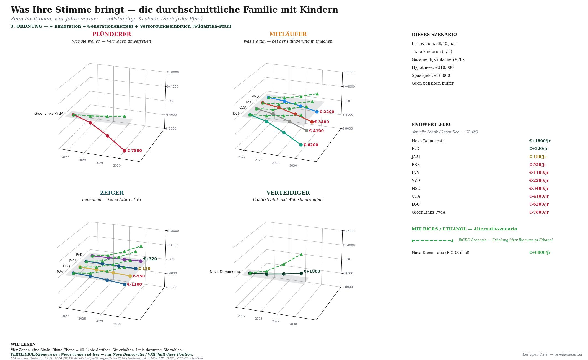
Soweit die Zahlen. Ab hier die Analyse: drei Überzeugungen, an eben diesen Zahlen gemessen.
Dieser Text ist kein Angriff. Kein Aufruf. Kein Versuch, Sie zu überzeugen.
Dieser Text ist eine Tabelle mit Zahlen, gefolgt von dem, was diese Zahlen bedeuten.
Was Sie damit machen, ist Ihre Sache. Wir bitten nur um eines: Lesen Sie bis zum Ende.
Wer PRO, GroenLinks-PvdA oder D66 wählt, tut das aus einem moralischen Selbstverständnis heraus. Das ist nicht zynisch gemeint — es ist eine ehrliche Beobachtung. Der linke Wähler sieht sich nicht als Egoisten, sondern als Teilnehmer an einem größeren Gut.
Drei Überzeugungen tragen dieses Selbstverständnis:
Erstens: Die Reichen müssen verarmen, denn ihr Reichtum ist entweder unverdient oder auf Kosten anderer entstanden. Umverteilung ist gerecht.
Zweitens: Mein Arbeitsplatz und mein Einkommen sind bei links sicherer. Rechte Parteien streichen Stellen, kürzen Löhne und lassen Arbeitgebern freie Hand.
Drittens: Die Gewerkschaft schützt mich, und die Partei, die die Gewerkschaft unterstützt, schützt mich. Kollektivverhandlungen sind mein Sicherheitsnetz.
Diese drei Überzeugungen werden in diesem Stück nicht mit Argumenten bestritten. Sie werden an Zahlen gemessen — drei Kapitel, sechs Szenarien, eine Schlussfolgerung. Die Zahlen stammen aus Berechnungen auf Basis der CBS-Kaufkraftreihen, Statistics South Africa, argentinischen Rentendaten und den Elastizitäten des CPB.
Drei Ordnungen werden stets durchgerechnet. Die erste Ordnung ist das, was eine Partei direkt mit Ihrem Portemonnaie macht: Steuern, Zuschüsse, AOW. Die zweite Ordnung fügt die Folgen hinzu, die sich aus dieser Politik ergeben: Arbeitslosigkeit, Inflation, Rentenpoterosion. Die dritte Ordnung rechnet die vollständige Kaskade durch: Emigration von Vermögenden, Generationseffekt, Leistungsabbau — der Weg, den Südafrika in den vergangenen fünfzehn Jahren zurückgelegt hat.
Eine letzte Vorbemerkung. PRO ist die progressive Fusion, in der GroenLinks-PvdA 2025 aufging. In der Durchrechnung werden sie als ein Kontinuum behandelt, denn das Programm ist im Wesentlichen dasselbe.
„Wenn die Reichen ein bisschen weniger haben, haben wir ein bisschen mehr."
— die implizite Schlussfolgerung
Der Gedanke ist intuitiv und moralisch: Vermögen, das sich an der Spitze ansammelt, darf zu denen zurückfließen, die weniger haben. Eine Vermögensteuer von 2 Prozent, ein höherer Box-2-Satz, eine Millionärsabgabe — das wirkt gerecht und scheint schmerzlos für denjenigen, der selbst keine Millionen besitzt. Zwei Szenarien zeigen, was tatsächlich passiert.
Jacobus, 58, GmbH-Geschäftsführer — was mit ihm passiert
Jacobus führt ein Familienunternehmen in Twente. Fünfzehn Mitarbeiter, ein Umsatz von vier Hunderttausend Euro, ein Eigenheim, eine BV mit €120.000 Vermögen, ein Rentenpot von €145.000 und Ersparnisse, die er in dreißig Jahren Arbeit zusammengespart hat. Die Unternehmensnachfolge ist für 2033 geplant. Er ist — nach PRO/GL-PvdA-Maßstäben — ein Reicher. Für seine Nachbarn ein durchschnittlicher Unternehmer.
{width="6.5in" height="6.296372484689414in"}
Kaskade für den GmbH-Geschäftsführer — drei Ordnungen, Endwert 2030 je Partei. Unter PRO/GroenLinks-PvdA steigt der Verlust von €7.500 (direkte Abgabe) über €9.412 (einschließlich Arbeitslosigkeitseffekt) bis auf €18.772 pro Jahr, wenn die vollständige Kaskade zählt. D66 folgt mit Abstand mit −€11.414 pro Jahr.
Die erste Ordnung ist das, was im Wahlprogramm steht: Vermögensteuer plus Box 2 plus Millionärsabgabe kosten Jacobus im Jahr 2030 etwa €7.500. Ein Betrag, der für ihn spürbar ist, aber tragbar.
Dann beginnt die Kaskade. Seine Kunden werden ärmer — sie geben weniger aus, sein Umsatz sinkt. Seine Mitarbeiter werden teurer, weil der Arbeitslosigkeitsdruck die Lohnkosten treibt. Sein Rentenpot rentiert weniger, weil Kapital das Land verlässt und Börsenkurse einbrechen. Zweite Ordnung: −€9.412.
In der dritten Ordnung verliert seine BV an Wert — nicht durch direkte Abgaben, sondern weil die Betriebsnachfolgeregelung unter Druck gerät und hochqualifizierte Mitarbeiter in die Schweiz, nach Deutschland oder in die Vereinigten Staaten abwandern. Der Nachfolgeplan für 2033 wird unsicher. Drei seiner fünfzehn Mitarbeiter verlieren im Lauf von vier Jahren ihren Arbeitsplatz. Jacobus selbst verliert €18.772 pro Jahr — mehr als doppelt so viel wie die direkte Abgabe.
Maarten und Saskia, Doppelverdiener, zusammen €243.000
Maarten leitet ein Zwölfer-Team bei einem niederländischen Produktionsunternehmen. Saskia arbeitet als HR-Leiterin bei einem internationalen Dienstleister. Drei Kinder, Eigenheim für €1,1 Millionen in Bussum mit einer Hypothek von €420.000. Ersparnisse und Anlagen zusammen weit über €400.000. Für den PRO-Wähler: reich. Für sie selbst: hart arbeitend, hoch besteuert, wenig Freizeit.
{width="6.5in" height="6.154311023622047in"}
Kaskade für den Doppelverdiener mit hohem Einkommen. Die direkte Abgabe bei PRO/GL-PvdA: €11.500 pro Jahr. Die vollständige Kaskade: fast €37.000 pro Jahr — fünfzehn Prozent des gemeinsamen Familieneinkommens.
In der ersten Ordnung verlieren sie €11.500 pro Jahr durch den Spitzensteuersatz, Box 3 und die Millionärsabgabe. Das ist erheblich, aber tragbar.
In der dritten Ordnung kommt hinzu: ihre Anlagen verdampfen, ihre Hypothekenzinsen steigen durch Kapitalflucht, ihre Kinder werden mit schrumpfendem Privatbildungsangebot konfrontiert. Und — das ist entscheidend — bei ihnen ist die Option zur Emigration realistisch. Maarten kann in Frankfurt oder Zürich arbeiten. Saskia auch. Wenn der Verlust die €30.000 pro Jahr übersteigt, fangen sie an zu rechnen. Und viele Tausende wie sie auch.
Was die Zahlen sagen
Wenn Jacobus und Maarten/Saskia zusammen €56.000 pro Jahr weniger zur niederländischen Wirtschaft beitragen, verschwindet dieses Geld nicht bei ihnen und geht nicht in die Sozialhilfe. Es verschwindet in die Schweiz, in die Vereinigten Staaten, nach Singapur. Es kommt nie zurück. Die Steuerbasis schrumpft. Die Sozialhilfe wird kärger — nicht reicher.
Das ist keine Ideologie. Das ist die Zahlenreihe Südafrikas zwischen 2010 und 2026. Die Vermögensteuer wurde eingeführt, Kapital flüchtete, die Arbeitslosigkeit stieg auf 32,7 Prozent, die Jugendarbeitslosigkeit auf 60,9 Prozent. Die Armut, die man durch Umverteilung bekämpfen wollte, wurde vertieft.
„Die VVD entlässt mich. PRO/GL-PvdA schützt mich."
— die implizite Schlussfolgerung
Der Gedanke ist klar: Rechte Parteien stehen Arbeitgebern näher, und Arbeitgeber wollen Personal so günstig wie möglich. Linke Parteien stehen Arbeitnehmern näher, erhöhen den Mindestlohn, schützen die WW, fordern feste Verträge. Zwei Szenarien zeigen, was passiert, wenn Sie Ihren Arbeitsplatz verlieren und wenn Sie als Alleinverdiener eine Familie unterhalten.
Tom, 45, Arbeitsloser nach Betriebsschließung
Tom arbeitete achtzehn Jahre in einem metallverarbeitenden Betrieb in Doetinchem. Das Unternehmen wurde 2026 geschlossen — die deutschen Auftraggeber sind weg, der Auftragsbestand ist leer. Tom hat eine WW-Leistung von 70 Prozent seines letzten Lohns von €52.000. Er hat eine Hypothek von €280.000 auf sein Haus, ein zwölfjähriges Kind und €25.000 auf dem Sparkonto. Er glaubt, dass PRO/GL-PvdA ihn schützen wird.
{width="6.5in" height="6.296372484689414in"}
Kaskade für den Arbeitslosen Tom. Der Unterschied zwischen der ersten Ordnung (+€1.200) und der dritten Ordnung (sehr tief negativ) ist dramatisch — weil er genau in die Gruppe fällt, die als erste keine neue Stelle findet, wenn die Arbeitslosigkeit steigt.
In der ersten Ordnung profitiert Tom: PRO/GL-PvdA erhöht seine WW um €1.200 pro Jahr, verlängert die Dauer, bietet Weiterbildung an. Das stimmt sachlich. Auf dem Papier ist er besser gestellt.
Aber die zweite Ordnung macht seine Situation bedrängend. Der Arbeitslosigkeitsdruck, der aus dem höheren Steuerdruck folgt — Kapital flüchtet, Unternehmer investieren nicht, Kunden kaufen weniger — macht es für Tom schwerer denn je, eine neue Stelle zu finden. Pro kumuliertem Prozentpunkt zusätzlicher Arbeitslosigkeit kostet ihn das durchschnittlich vier Monate länger ohne Arbeit. Das sind €6.000 pro kumuliertem Prozentpunkt.
In der dritten Ordnung wird Tom zur Statistik. Nach zwei Jahren WW fällt seine Leistung auf Sozialhilfe. Seine Hypothek wird durch gestiegene Zinsen unbezahlbar. Seine Berufsfähigkeit veraltet durch Inaktivität. Er landet in der Kategorie „Mismatch" — Arbeitnehmer, deren Qualifikationen nicht mehr zum Markt passen. Unter PRO/GL-PvdA verliert Tom langfristig mehr als sein Jahreseinkommen.
Pieter, 42, Alleinverdiener mit drei Kindern
Pieter arbeitet als Gruppenleiter in einer industriellen Bäckerei. €58.000 brutto pro Jahr. Seine Frau Marije kümmert sich um ihre drei Kinder von acht, elf und dreizehn Jahren. Sie sind eine klassische Alleinverdienerfamilie — ein Modell, das von allen Parteien außer CDA, BBB und PVV als veraltet abgelehnt wurde.
{width="6.5in" height="6.127155511811024in"}
Kaskade für den Alleinverdiener mit drei Kindern. Unter PRO/GL-PvdA verliert er in der dritten Ordnung €15.252 pro Jahr — fast sechsundzwanzig Prozent seines Jahreseinkommens. D66 folgt mit €10.279 Verlust. Bei CDA und BBB hat er einen Überschuss.
Die erste Ordnung von PRO/GL-PvdA für Pieter: minus €1.000 pro Jahr. Der allgemeine Steuerrabatt (heffingskorting) für seine nicht berufstätige Frau wird weiter abgebaut — ein Prozess, den PRO/GL-PvdA und D66 aus Gründen der „Individualisierung" beschleunigen wollen.
Die zweite Ordnung: Eine Familie von fünf ist inflationsempfindlich. Essen, Kleidung, Sport, Urlaub — die €240 pro Indexpunkt an Mehrausgaben schneiden direkt in das verfügbare Einkommen. Das Arbeitslosigkeitsrisiko bei Pieter ist zudem doppelt hart: Bei Entlassung fällt hundert Prozent des Familieneinkommens weg, nicht wie bei Doppelverdienern die Hälfte.
Die dritte Ordnung: Seine Hypothek wird durch gestiegene Zinsen schwerer, seine Rentenbildung stagniert, und seine drei Kinder sind genau die Generation, die die Kaskade in vollem Umfang abfangen wird. Für Pieter: minus €15.252 pro Jahr — fast ein Viertel seines Bruttolohns. Nicht durch eine direkte Steuer, sondern durch das, was seine Stimme in der Kaskade auslöst.
Was die Zahlen sagen
Die Überzeugung, dass links den Arbeitnehmer schützt, stimmt auf der Ebene der ersten Ordnung. Der Mindestlohn steigt. Die WW wird verlängert. Die Sozialhilfe wird großzügiger.
Aber die zweite und dritte Ordnung zeigen, was mit den Arbeitsplätzen selbst passiert. Die Arbeitslosigkeit steigt durch Kapitalflucht und Investitionsrückgang. Die Menschen, die ihre Stelle verlieren, finden keine neue mehr. Der Alleinverdiener, der noch Arbeit hat, sieht seine Kaufkraft durch Inflation schwinden.
Eine höhere Leistung bei einem ausgedünnten Arbeitsmarkt ist kein Schutz. Es ist eine Abfahrt auf dem Weg zur Sozialhilfe.
„Gemeinsam stark. Kollektivverhandlung ist mein Sicherheitsnetz."
— die implizite Schlussfolgerung
Für jemanden, der Mitglied von FNV, CNV oder einer Branchengewerkschaft ist, fühlt sich die Mitgliedschaft wie eine Versicherung an. Die Gewerkschaft kämpft für Ihren Tarifvertrag, Ihre Rente, Ihre Arbeitsbedingungen. PRO/GL-PvdA und in geringerem Maße D66 stehen an ihrer Seite. Zwei Szenarien zeigen, was dieser Schutz in der Kaskade tatsächlich einbringt.
Sandra, 38, alleinstehende Mutter in der Sozialhilfe
Sandra arbeitete als Pflegerin in der ambulanten Pflege, bis sie 2024 einen Burnout erlitt. Seitdem bezieht sie Sozialhilfe, mit einem Kind von acht Jahren. Ihr Nettoeinkommen — Sozialhilfe plus Wohngeldzuschuss plus Kindergeldbonus plus Pflegezuschuss — beträgt etwa €21.000 pro Jahr. Sie ist das Gesicht dessen, dem PRO/GL-PvdA nach eigener Aussage helfen will.
{width="6.5in" height="6.296372484689414in"}
Kaskade für Sandra. Die Umkehrung ist hier am schärfsten: In der ersten Ordnung gibt PRO/GL-PvdA ihr €1.300 pro Jahr dazu. In der dritten Ordnung verliert sie €7.555 — weit mehr als ein Drittel ihres Jahreseinkommens. Die Partei, die ihr am meisten verspricht, schadet ihr am meisten.
Die erste Ordnung von PRO/GL-PvdA für Sandra: plus €1.300 pro Jahr. Höhere Sozialhilfe, erweiterter Kindergeldbonus, besserer Pflegezuschuss. Das ist keine Lüge — es steht im Programm und wird umgesetzt, sobald die Partei in einer Koalition sitzt.
Die zweite Ordnung ist verheerend für jemanden, der von festen Kosten lebt. Sandra hat 90 Prozent ihres Einkommens in Miete, Energie und Lebensmittel gebunden. Inflation trifft sie doppelt: Ihre Leistung steigt mit der Lohnindexierung, ihre Ausgaben mit der Preisindexierung. Der Unterschied ist eine schleichende Verarmung, die jeden Monat größer wird. Zudem wird der Ausstieg aus der Sozialhilfe in Erwerbsarbeit faktisch unmöglich: Die Beschäftigung, in die sie einst zurückkehren könnte, schrumpft.
Die dritte Ordnung vollendet den Kreislauf. Pflege wird knapp bei Haushaltsdefizit. Wartelisten wachsen. Hilfsmittel müssen länger genutzt werden als gut ist. Pflegepersonen sind nicht mehr vorhanden — sie sind abgewandert oder selbst in Not. Sandra verliert in der Kaskade €7.555 pro Jahr — mehr als ein Drittel ihres Einkommens. Unter GL-PvdA. Der Partei, die sie unterstützt.
Linda, 47, chronisch krank (MS)
Linda arbeitete zwanzig Jahre als Logistikplanerin. Multiple Sklerose zwang sie 2022 aufzuhören. WIA-Leistung: 75 Prozent ihres letzten Lohns von €42.000 = €31.500 pro Jahr. Jährlich volle Eigenbeteiligung bei Pflege, teure krankheitshemmende Medikation, Hilfsmittel, Pflege durch ihre Schwester. Linda ist diejenige, die keine Partei fallen lassen würde. Dennoch zeigt die Kaskade, was faktisch passiert.
{width="6.5in" height="6.296372484689414in"}
Kaskade für Linda, MS-Patientin. PRO/GL-PvdA bietet ihr in der ersten Ordnung €1.400 dazu. In der dritten Ordnung verliert sie €9.842 pro Jahr — weit mehr als 31 Prozent ihrer Leistung. Das ist keine Abstraktion, das ist das Warten auf einen Rollstuhl, der nicht kommt.
Erste Ordnung für Linda unter PRO/GL-PvdA: plus €1.400 pro Jahr. Leistung hoch, Eigenbeteiligung runter, kostenlose Physiotherapie wiederhergestellt. Eine Partei, die sie ernst nimmt.
Zweite Ordnung: Inflation schlägt auf ihre fixen Ausgaben und auf die Pflegekosten durch, die nicht erstattet werden. Medikamente werden teurer, Hilfsmittel werden teurer. Bei Arbeitslosigkeit in ihrer Umgebung fällt Pflege teilweise weg — ihre Schwester bekommt eigene Probleme. Der Vorteil von €1.400 ist im zweiten Jahr bereits verschwunden.
Dritte Ordnung: Pflege wird strukturell knapper bei Haushaltsdefizit. Wartelisten wachsen. Hilfsmittel halten länger als gut ist. Pflegepersonen sind nicht mehr da — sie sind abgewandert oder selbst in Not. Linda verliert €9.842 pro Jahr. Nicht durch direkte Kürzung, sondern durch das, was ihre Stimme in Bewegung gesetzt hat.
Was die Zahlen sagen
Die Gewerkschaft kämpft für Tariflöhne und Rentenansprüche. Das hat Wert. Aber der Tarifvertrag gilt nur, wenn es Beschäftigung gibt. Die Rente gilt nur, wenn der Rentenpot rentiert. Die Leistung gilt nur, wenn die Steuerbasis intakt ist.
In der Kaskade schrumpfen alle drei. Die heutige Tarifvereinbarung ist leer, wenn die industrielle Basis sich heute verabschiedet. Die Rente, die die FNV erkämpft hat, ist ein Zehntel weniger wert, wenn die Börsen durch Kapitalflucht einbrechen. Die Sozialhilfe, die PRO/GL-PvdA erhöht, kauft weniger, wenn die Inflation die Preise doppelt so stark treibt.
Schutz in der ersten Ordnung ist kein Schutz, wenn die zweite und dritte Ordnung unterhöhlt werden. Es ist die Illusion von Schutz. Und Illusionen kosten Geld — in diesem Fall mehr als ein Drittel von dem, was Sandra und Linda einbringen.
Sechs Menschen. Drei Ordnungen. Drei Überzeugungen.
Jacobus und Maarten/Saskia sollten gemäß der ersten Überzeugung verarmen. In der Kaskade verarmen sie — nehmen aber das ganze Land mit in ihren Fall. Ihre €56.000 Beitragsminderung ist keine Übertragung auf Sandra. Es ist ein Verlust, der anderswo aufgesaugt wird.
Tom und Pieter sollten gemäß der zweiten Überzeugung bei links besser geschützt sein. Tom verliert mehr als sein Jahreseinkommen durch langanhaltende Arbeitslosigkeit. Pieter verliert ein Viertel seines Gehalts durch das, was seinen Kollegen widerfährt und was seine Frau nicht mehr über den Steuerrabatt auffangen kann.
Sandra und Linda sollten gemäß der dritten Überzeugung am meisten gewonnen haben. Sie verlieren in der Kaskade ein Drittel ihres Einkommens. Nicht weil PRO/GL-PvdA sie schädigt — diese Absicht fehlt — sondern weil die Politik die Grundlage zerstört, auf der ihre Leistungen ruhen.
Die übergreifende Zahlentabelle
Für alle, die alle Zahlen an einem Ort sehen möchten: nachfolgend das Dritte-Ordnungs-Ergebnis je Szenario, je Partei, im Jahr 2030. Zwanzig Lebenssituationen, zehn Positionen. Die Konsequenzkarte (Gevolgenkaart) in einer Matrix.
{width="7.0in" height="5.342049431321085in"}
De Gevolgenkaart — alle zwanzig Szenarien auf einmal. Für Bürger: Prozentsatz des Jahreseinkommens. Für Unternehmen: Prozentsatz des Umsatzes. Vertikal lesen, um eine Partei zu beurteilen; horizontal lesen, um Ihre Situation zu finden. Die Farbe ist Ihr Stimmresultat.
Ein Muster fällt auf. Die linke Spalte — PRO/GL-PvdA — ist für nahezu jede Gruppe tiefrot. Die rechte Spalte — Nova Democratia/VMP, ein meritokratisches Referenzmodell — ist für jede Gruppe grün. Nicht weil das eine das andere bevorzugt, sondern weil das eine Modell Schaden anrichtet und das andere nicht.
Der PRO-Wähler wird mit einem Paradox konfrontiert: Das Ergebnis seiner Stimme ist für nahezu jedes Ziel, das er nach eigener Aussage verfolgt, negativ. Für diejenigen, denen er helfen will. Für das Land, in dem er lebt. Für seine eigene Zukunft.
Was dies nicht ist
Dieser Text ist kein Plädoyer für eine andere Partei. Er ist keine verdeckte Kampagne. Er ist keine Verkaufsveranstaltung für Nova Democratia — die steht darin als Referenzmodell, nicht als Alternative auf dem Stimmzettel (denn sie steht dort nicht).
Was dies ist: der Versuch, drei Glaubensüberzeugungen gegen drei Ordnungen von Zahlen zu legen. Ohne Geschrei. Ohne Vorwurf. Die Zahlen stehen da. Die Quellen werden unten genannt. Es steht Ihnen frei, sie abzulehnen — aber dann müssen Sie erklären, warum die Kaskade, die in Südafrika beobachtet wurde, in Argentinien beobachtet wurde, in jedem Land, das diesen Weg gegangen ist, in den Niederlanden nicht auftreten wird.
Das ist eine stichhaltige Frage. Wir glauben, dass es keine stichhaltige Antwort darauf gibt.
Die Zahlen in diesem Text wurden mit einem Dreistufenmodell berechnet.
Die erste Ordnung stammt aus den Wahlprogrammen der zehn Positionen, übertragen auf die finanzielle Lage des Szenarios. Vermögensteuer, Box 2, Box 3, AOW-Kopplung, Zuschüsse, Mehrwertsteuer — alles aus veröffentlichtem Material.
Die zweite Ordnung kombiniert vier Makroeffekte mit dem sogenannten „Druckindex" je Partei. Pro Indexpunkt verändert sich die Arbeitslosigkeit um 0,018 Prozentpunkte pro Jahr (kalibriert auf argentinische Zahlen 2024: 7,7 Prozent steigend auf 8,5 Prozent in einem Jahr), die Inflation um 0,055 Prozent über dem EZB-Ziel, das Renditenpot-Rendement um −0,033 Prozent. Für GL-PvdA mit Druckindex 45 bedeutet das: 0,8 Prozentpunkte zusätzliche Arbeitslosigkeit pro Jahr, 2,5 Prozent zusätzliche Inflation, 1,5 Prozent niedrigere Rentenrendite.
Die dritte Ordnung fügt Emigrationseffekte, Generationseffekte (Kinder arbeitslos, Eltern helfen) und Leistungsabbau hinzu. Emigration wird auf 8.000 Hochverdiener pro €10 Mrd. strukturellem Druck pro Jahr veranschlagt, kalibriert auf den südafrikanischen Abfluss 2010–2026.
Die Makroanker sind:
Das Modell wurde bewusst transparent gehalten — keine Black Box, keine versteckten Annahmen. Wer die Berechnungen reproduzieren oder anfechten möchte, kann das. Die offene Excel-Datei wird auf gevolgenkaart.nl verfügbar sein, sobald die Konsequenzkarte (Gevolgenkaart) als Plattform live geht.
GESCHRIEBEN VON JACOBUS VAN MERKSTEIJN MIT REDAKTIONELLER KI-UNTERSTÜTZUNG
HET OPEN VIZIER — OPENVIZIER.ORG
DE GEVOLGENKAART — GEVOLGENKAART.NL
JUNI 2026
Vier Fragen an sich selbst. Keine Partei wird empfohlen. Keine Antwort ist richtig oder falsch. Was Sie damit machen, ist Ihre Sache.
Welche der drei Überzeugungen erkennen Sie als eigenen Antrieb?
Reiche verarmen / Eigener Arbeitsplatz sicherer / Gewerkschaft schützt / keine der drei
Welches Personenprofil oben ähnelt am ehesten Ihrer eigenen Position?
Wählen Sie das Profil, das Ihnen am nächsten liegt — nach Alter, Einkommen, Familie, Beruf.
Welche Spalte in der Matrix repräsentiert die Partei, für die Sie dieses Jahr stimmen würden?
Suchen Sie die Spalte, schauen Sie nach unten zur Zeile Ihres Profils.
Stimmt diese Zahl mit dem überein, was Sie erwartet hatten?
Wenn ja: dann stimmen Sie bewusst für dieses Ergebnis. Wenn nein: dann ist dies der erste Moment, an dem Sie das selbst feststellen.
Sie sind fertig. Was Sie jetzt tun, gehört Ihnen.

Jacobus van Merksteijn
Chefredakteur von Het Open Vizier. Unternehmer, Entwickler industrieller und governance-bezogener Innovationen (Carbon-Alert Ltd, TerraClean Ltd, GuardSkin Ltd). Schreibt über wirtschaftliche, ökologische und politische Systemfragen — aus eigener Erfahrung mit der Brüsseler und Haager Entscheidungsmaschinerie.